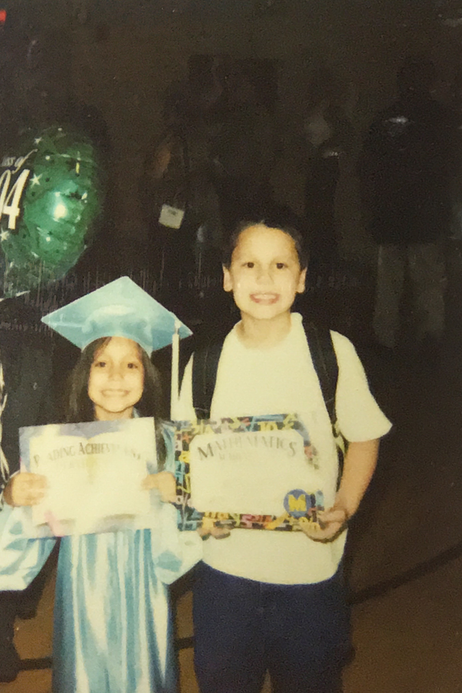
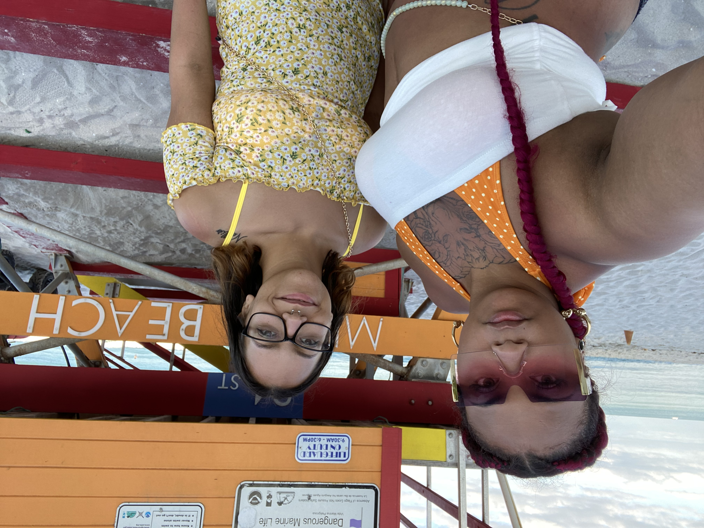

Early Life
I grew up in the foster care system in NYC. Foster care, in itself, is a rough experience on anyone’s mental and emotional health. You always find yourself wondering why you? How come no body wants to keep you in their family? Do your parents even care if someone else wanted to adopt you? The list of doubts and insecurities pile up.
The times that I did go to have stay over visits with my family, my father was verbally and physically abusive to both my siblings and I. He called us all kinds of names that we didn’t deserve at such a young age, crippling my already diminished sense of self-worth.
That led me to go down a delinquent path of cutting school, being rude to people who didn’t deserve it, getting into fights, and all kinds of drama.
Eventually I found myself in an abusive relationship, failing out of college, and struggling to keep food on my table.
It took me months of therapy, two years of soul searching, and a lot of time spent talking and mostly crying it out with my friends for me to realize that I deserved better.
That I deserve better.
No one should ever feel less than. No one should ever feel like they don’t belong, or like they don’t shine as brightly as others do.
Everyone deserves to be treated fairly and with kindness.
I can honestly say that without therapy and my friends as my support system, I would not be the person I am today. Everyday is a new day for me to learn and improve on myself. The best way to do that is to give back what I have learned along the way to someone else in need who might be a little further back on their road to self discovery.
Currently
I am currently in way better head space than I've ever been. I have grown a lot, learn from a lot of mistakes, and made a few more. It wasn't until I lost my father (June 2022) that I realized just how much he tried his hardest for us. I've always had a lot of conficting feelings when it came to my family, but that brought out the worst of them. It's been a very strange experience for me. I love my family, and I grieve what we could have had, had they had the emotional intelligience to see past themselves. I also grieve him as he was. I know that He did the best with what he knew, and did his best to make sure we know how to survive. He taught us from his understanding of the world, based on his life experieneces, all the while wanting better for us. He just never knew how to express those things, because he wasnt taught it. He was only taught to express anger, and because of this, we will never get to exprerience the softer, more loving side of him. As much as that hurts, its okay. I love him for who he was, and for the knowledge he shared with me. Especially all the things I didnt realize he was teaching me.
Aside from the things with my father, I have lost quite a few friends, but I have gained so much more. I have finally met people that I feel will help me to keep moving upwards. Very much unlike the old crew I used to hang around, who were so happy to here about my stagnation.
I feel that I have grown more intellectually, and I have learned so much about myself. I have found that I am actually more conservative than I onced belived to be true. I no longer identify with the previous versions of myself, although I am greatful to them for getting me this far in my life.
Outside of all of that heavy stuff, check out these cute photos of my Family and I!

|

|
 |

|

|
 |